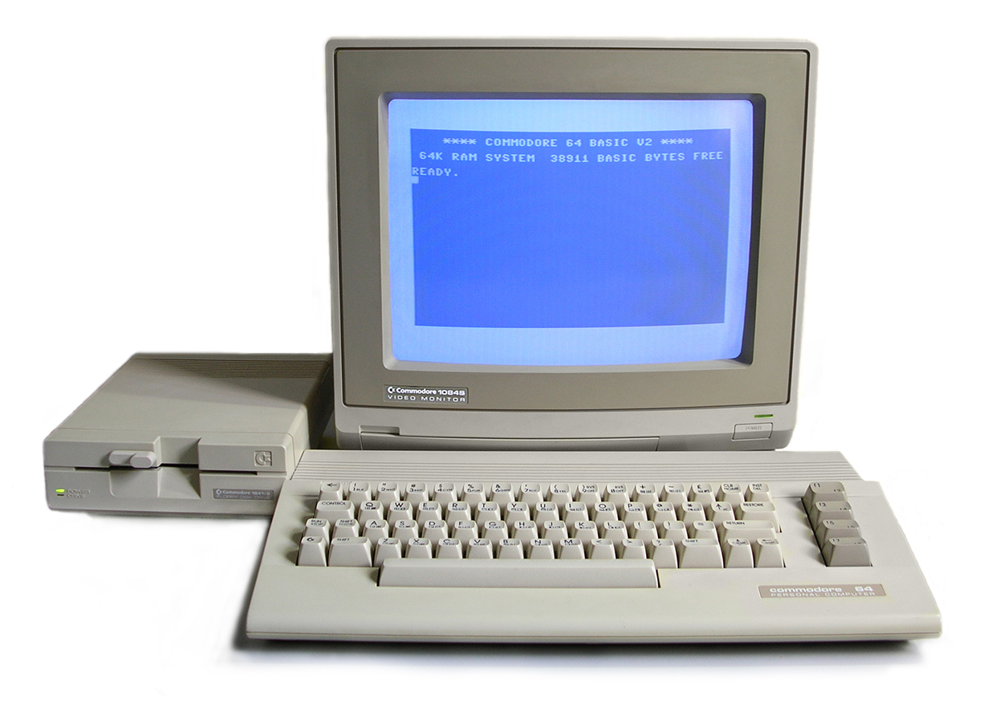
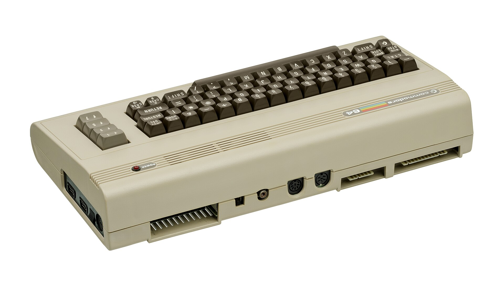

The Commodore 64, launched in 1982, became a cultural icon of home computing. Boasting a total of 64 KB of RAM and the revolutionary SID sound chip, it dazzled users with impressive graphics and audio capabilities. Powered by the MOS 6510 processor, the C64 was a playground for gamers, hobbyist programmers, and curious minds alike. Whether used for gaming, music creation, or learning BASIC, it played a pivotal role in shaping the personal computing era. With a total of over 17 million units sold , the Commodore 64 stands as a beloved pioneer, bringing affordable computing power into countless homes and inspiring generations of tech enthusiasts.
Step into the golden age of computing where innovation met imagination. The Commodore 64 isn't just hardware, it's history. Whether you're a retro enthusiast or a curious newcomer, you'll find authentic gear, software, and stories that honor the legacy of one of the greatest home computers ever built. We don't just sell vintage tech, we preserve a culture, spark memories, and celebrate the pioneers who coded, gamed, and dreamed in 8-bit brilliance.
